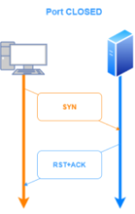
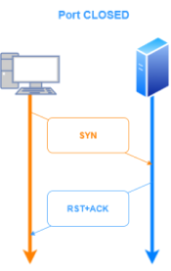

hping3
Protocol Selection
Default protocol of hping3 is TCP, by will send tcp headers to target host's port 0 with a winsize of 64 without any tcp flag on
• -1 or --icmp → Base discovery, send ICMP packets
hping3 -1 <address> -c 3
• -2 or --udp → UDP discovery, send UDP packets
hping3 -2 <address> -c 3
TCP/UDP related
• -S or --syn → send TCP packets with SYN flag set
hping3 -S <address> -c 3
• -F or --fin → send TCP packets with FIN flag set
hping3 -F <address> -c 3
• -U or --urg → send TCP packets with URG flag set; stand for urgent, this type of flag is to inform the receiver that this data should be prioritized
hping3 -U <address> -c 3
• -X or --xmas → send TCP packets with Xmas flag set
hping3 -X <address> -c 3
GENERAL OPTIONS:
-p → send packet to a specified port, instead of the default port 0
-c or --count → packet count
How scan the whole subnet
Substitute x to the last octet or in any part of the address and add the option --rand-dest that instruct hping3 that have to substitute x
To select the network interface instead we have to add the -I option followed by the interface name
hping3 -1 192.168.1.x --rand-dest -I eth0
Analize response from the target
hping3 -p 53 -S 10.50.97.5
 
